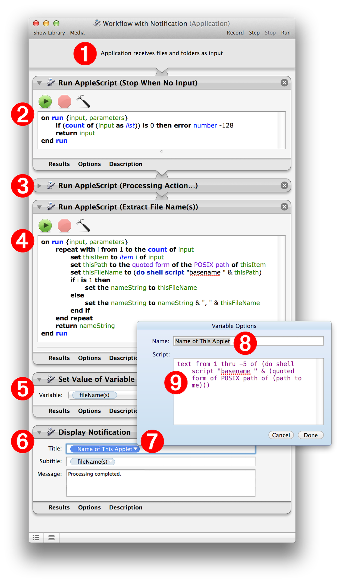
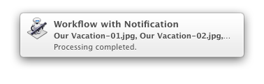
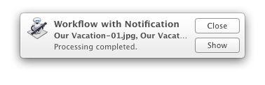

Using the Display Notification action in Automator workflows can be as simple as adding the action to the end of a workflow, and entering the relevant title, subtitle, and description.
However, you may wish to edit your notification workflows to be able to dynamically display custom information such as the applet name, or the names of the files processed by the workflow. In addition, you may wish to prevent the workflow from running without input when the user clicks on the notification banner or alert.
The following example workflow details how to implement custom controls for dealing with notifications.
DOWNLOAD the example workflow application (1.6 MB). To open the workflow in Automator, drag the workflow applet onto the Automator application icon.
The components of the workflow are described below:
(1) Workflow Input Banner - The banner of this workflow indicates that it has been saved as an application that derives its input from files dragged onto its icon.
(2) Stop Workflow Script - If your workflow requires files|folders as input, then you’ll want to begin the workflow with a Run AppleScript action containing a script to stop the workflow if the applet is launched by a notification alert or by a user double-clicking its icon.
(3) Processing Action(s) Placeholder - This action is a placeholder for the actions you’ll add, that process the items dragged onto the applet’s icon.

(4) Extract File Names Script - This Run AppleScript action contains a script that extracts the file/folder names of the items passed to the action, and passes those file/folder names as a comma-delimited text string, to the following action.
(5) Store File Names in Variable - This action stores the text string of file/folder names, passed from the previous action, into an Automator data variable titled: filenames(s)
(6) Notifications Action - The Display Notification action will trigger the display of a system notification banner or alert. The text input fields of this action accept Automator variables. The Automator variable titled filenames(s), is placed in the Subtitle field, and an AppleScript workflow variable is added to the Title field of the action.
(7) AppleScript Variable - The editing window of the AppleScript variable, accessed via the disclosure triangle on the right side of the variable bubble, contains two input fields, one for entering a name for the variable, and the other to contain the AppleScript script the variable will execute when the workflow is run.
(8) AppleScript Variable Title - The title for the AppleScript workflow variable.
(9) AppleScript Variable Script Code - The script code for the variable. This short script will extract the name of the workflow applet, and place it into the action’s Title field, when the workflow is run.
To see the workflow trigger a system notification, switch to the Finder, and drag some files onto the example applet. Don’t worry, since the workflow only contains a placeholder processing action, no actual processing of the dragged-on files will occur.
Depending on how you have the notification preferences set for this applet (see Preferences section of this topic), the workflow notification will appear as a banner or alert:


NOTE: since the example workflow begins with an action that stops the workflow if it has no input, clicking on the notification window will not cause the workflow to execute again.